Full days desde Lima
Escapadas de un día que salen desde Lima, con precio por persona y para dos.
Actualizado el martes 17 de noviembre de 2026. Precios referenciales.
Filtrar por presupuesto y zona en Plancito →
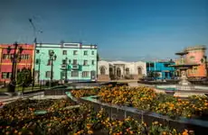
Ver y comprar →Tour de Lima al completo con entradas
S/ 903.22 para dos (S/ 451.61 por persona)
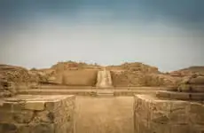
Ver y comprar →Excursión a Pachacamac
S/ 286 para dos (S/ 143 por persona)
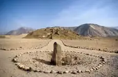
Ver y comprar →Excursión a Caral y Bandurria
S/ 1,240 para dos (S/ 620 por persona)
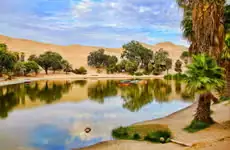
Ver y comprar →Excursión a Ica y Huacachina + Islas Ballestas en grupo reducido
S/ 452 para dos (S/ 226 por persona)
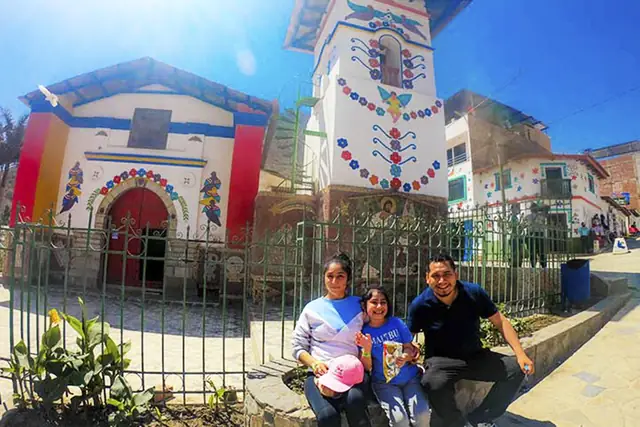
Ver y comprar →Full Day en Antioquía y Cieneguilla: Descubre Naturaleza y Cultura Cerca de Lima
S/ 135 para dos (S/ 67.50 por persona)
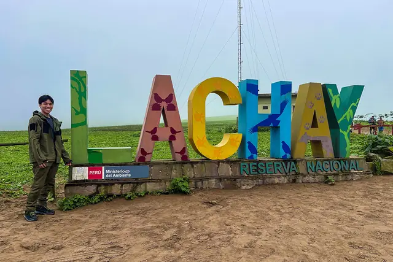
Ver y comprar →Full Day Lomas de Lachay – Caminata y avistamiento de fauna
S/ 195 para dos (S/ 97.50 por persona)
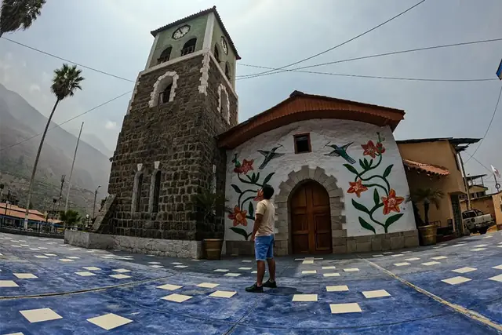
Ver y comprar →Full Day Callahuanca – Visita Huarochirí y disfruta sus Cataratas
S/ 202.50 para dos (S/ 101.25 por persona)
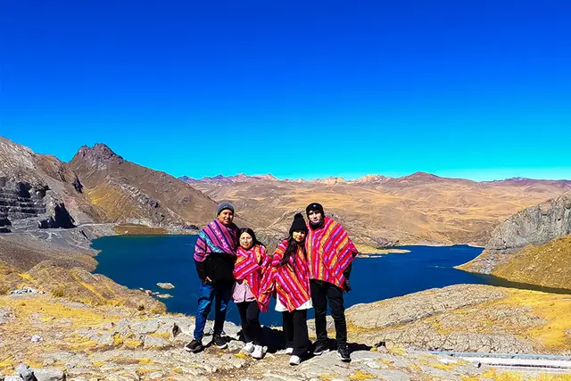
Ver y comprar →Full Day Cordillera la Viuda – Paseo en bote y ritual andino
S/ 202.50 para dos (S/ 101.25 por persona)
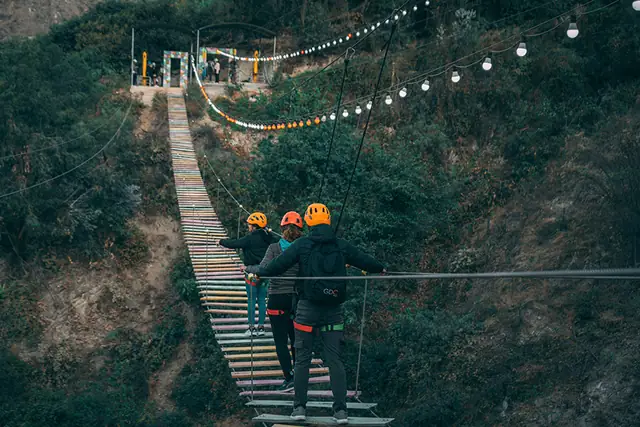
Ver y comprar →Full Day San Mateo de Otao desde Lima
S/ 210 para dos (S/ 105 por persona)
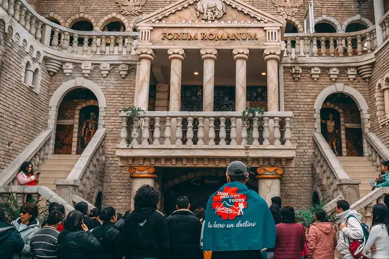
Ver y comprar →Full Day Castillo de Chancay – Recorrido guiado y Chancho al palo
S/ 210 para dos (S/ 105 por persona)
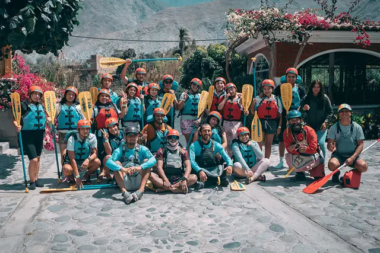
Ver y comprar →Tour Full Day Lunahuaná – Cuatrimoto, canotaje y pisco
S/ 210 para dos (S/ 105 por persona)
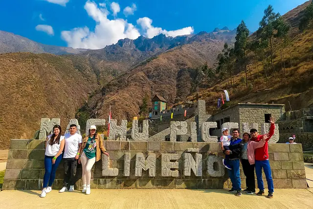
Ver y comprar →Full Day Machu Picchu Limeño – Recorre réplicas arqueológicas
S/ 225 para dos (S/ 112.50 por persona)
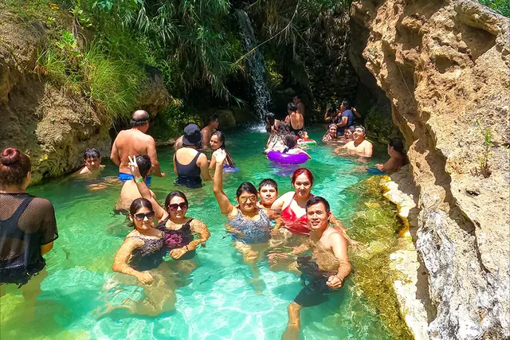
Ver y comprar →Full Day Churin – Relájate en los Baños Termales
S/ 225 para dos (S/ 112.50 por persona)
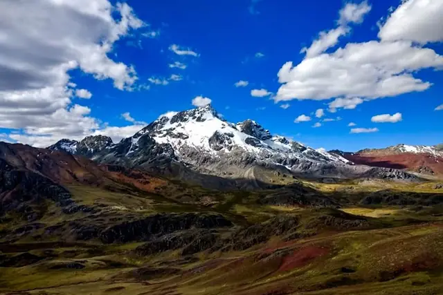
Ver y comprar →Tour Full Day Marcapomacocha – Experiencias y Paisajes andinos
S/ 262.50 para dos (S/ 131.25 por persona)
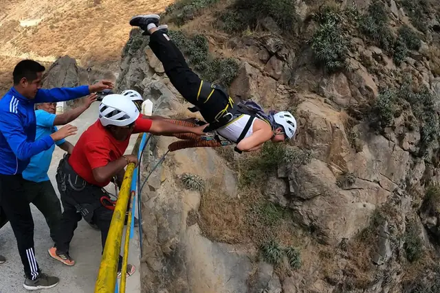
Ver y comprar →Full Day Cañón de Autisha – Rappel y Puenting extremo
S/ 285 para dos (S/ 142.50 por persona)
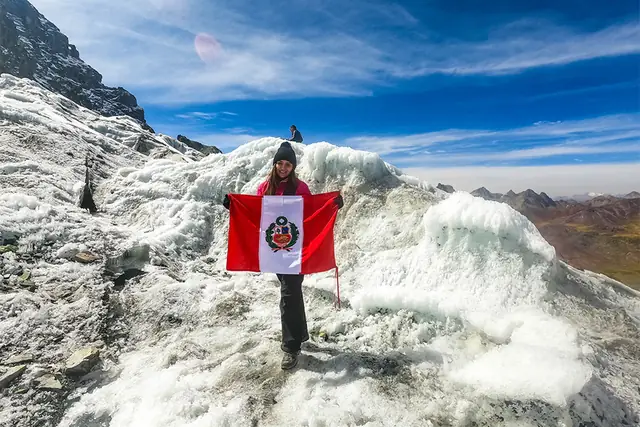
Ver y comprar →Full Day Nevado Rajuntay Desde Lima
S/ 300 para dos (S/ 150 por persona)
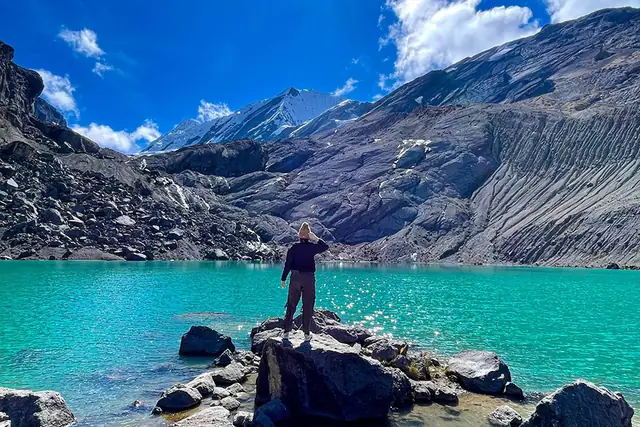
Ver y comprar →Full day Cordillera Raura – Trekking y baños termales de Churín
S/ 315 para dos (S/ 157.50 por persona)
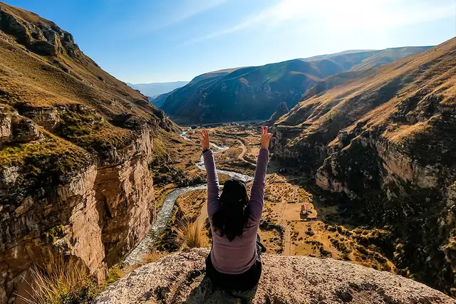
Ver y comprar →Full Day Cañon de Shutjo – Trekking entre montañas
S/ 322.50 para dos (S/ 161.25 por persona)
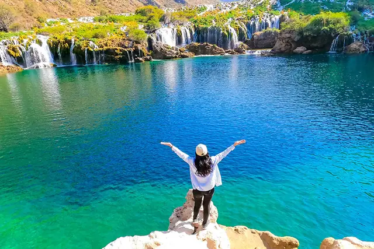
Ver y comprar →Full Day Huancaya – Pasea en bote y lagunas Turquesas
S/ 330 para dos (S/ 165 por persona)
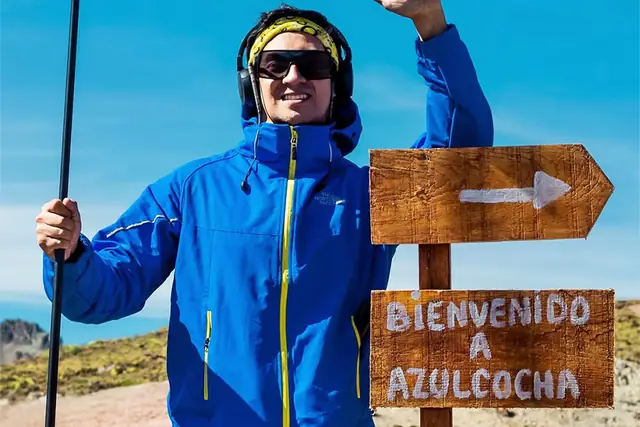
Ver y comprar →Full Day Vichaycocha – Laguna Azulcocha y Baños de Collpa
S/ 337.50 para dos (S/ 168.75 por persona)
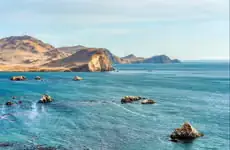
Ver y comprar →Excursión a Paracas y Huacachina
S/ 498.58 para dos (S/ 249.29 por persona)
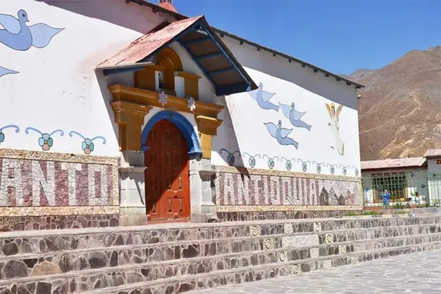
Ver y comprar →Full Day Antioquía Privado: Explora el pueblo más colorido de Lima
S/ 517.50 para dos (S/ 258.75 por persona)
- Ver y comprar →
Contrastes de Lima
S/ 800 para dos (S/ 400 por persona)
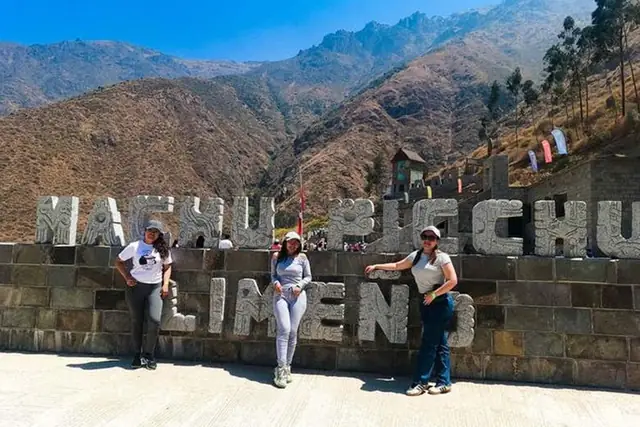
Ver y comprar →Machu Picchu Limeño Privado desde Lima
S/ 892.50 para dos (S/ 446.25 por persona)
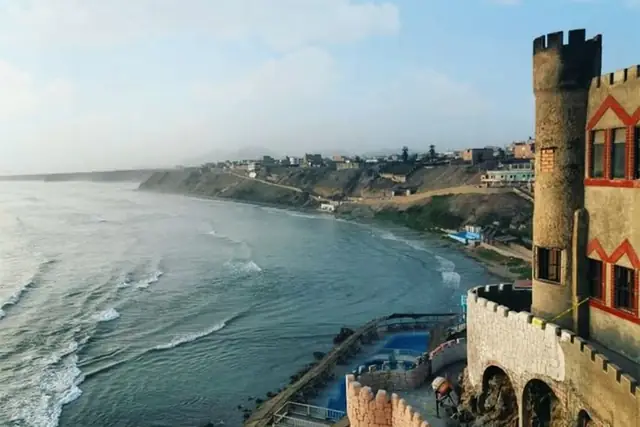
Ver y comprar →Tour Privado a Huaral: Visita el Castillo de Chancay a tu ritmo
S/ 1,125 para dos (S/ 562.50 por persona)
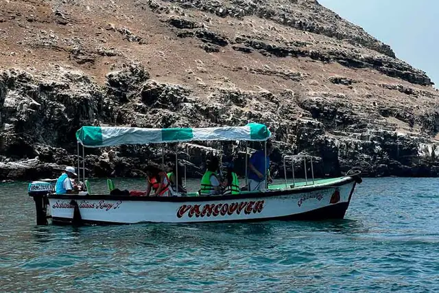
Ver y comprar →Full day Playas del Sur: Pesca Artesanal y Playa Naplo
S/ 1,282.50 para dos (S/ 641.25 por persona)
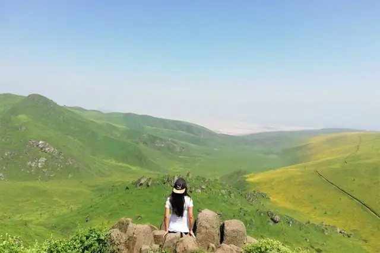
Ver y comprar →Lomas de Lachay Privado: Caminatas, Paisajes y Fotografía
S/ 1,575 para dos (S/ 787.50 por persona)
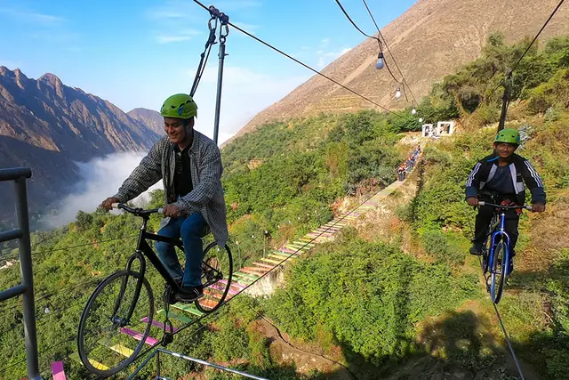
Ver y comprar →San Mateo de Otao privado: Experiencia auténtica en los Andes
S/ 1,822.50 para dos (S/ 911.25 por persona)
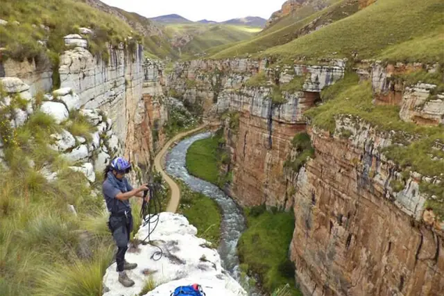
Ver y comprar →Cañón de Shutjo Privado: Recorre uno de los secretos del Perú
S/ 1,867.50 para dos (S/ 933.75 por persona)
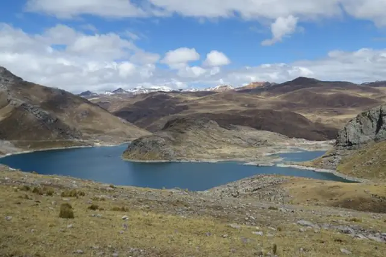
Ver y comprar →Cordillera La Viuda Privado: Aventura natural cerca de Lima
S/ 1,875 para dos (S/ 937.50 por persona)
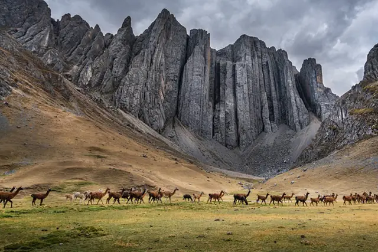
Ver y comprar →Vichaycocha Privado – Experiencia Full Day a Tu Ritmo
S/ 2,250 para dos (S/ 1,125 por persona)
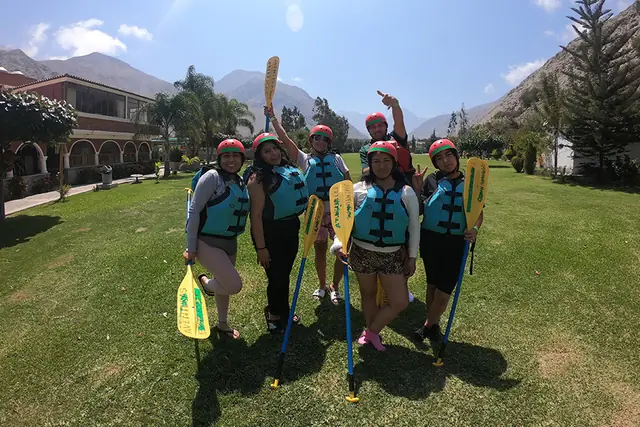
Ver y comprar →Day Trip a Lunahuaná desde Lima + deportes extremos (Privado)
S/ 2,250 para dos (S/ 1,125 por persona)
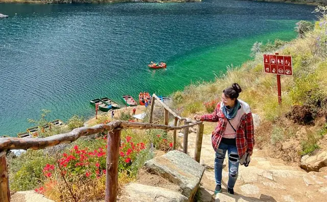
Ver y comprar →Full Day Privado Huancaya: Naturaleza y aventura en un solo día
S/ 2,587.50 para dos (S/ 1,293.75 por persona)
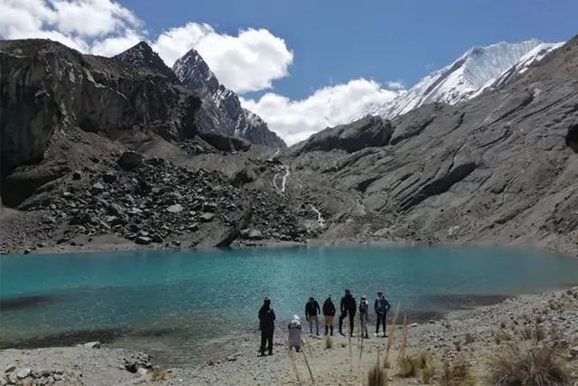
Ver y comprar →Tour Cordillera Raura Privado-Full day desde Lima
S/ 3,600 para dos (S/ 1,800 por persona)